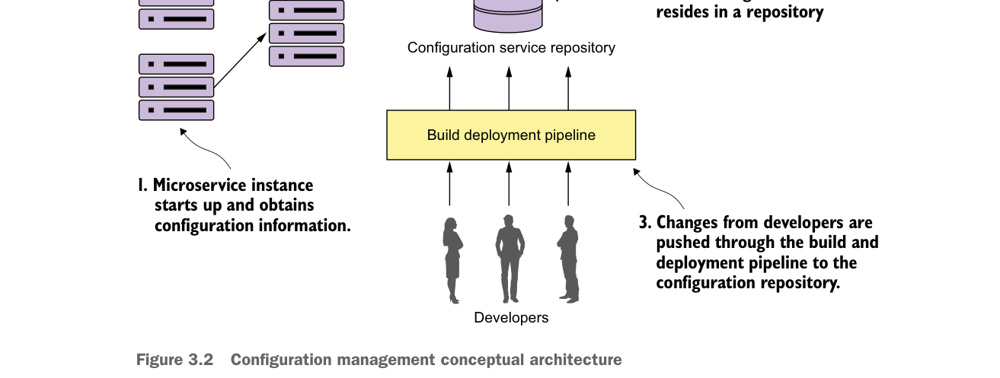

Kiến trúc khái niệm quản lý cấu hình
Trong hình 3.2, bạn thấy một số hoạt động diễn ra:
- Khi một instance microservice khởi động, nó sẽ gọi một service endpoint để đọc thông tin cấu hình dành riêng cho môi trường mà nó đang chạy. Thông tin kết nối cho quản lý cấu hình (thông tin xác thực kết nối, service endpoint, v.v.) sẽ được truyền vào microservice khi microservice đó khởi động.
- Cấu hình thực tế sẽ được lưu trong một repository. Tùy cách triển khai kho cấu hình của bạn, bạn có thể chọn các triển khai khác nhau để lưu trữ dữ liệu cấu hình. Các lựa chọn triển khai có thể gồm tệp dưới hệ thống quản lý mã nguồn, cơ sở dữ liệu quan hệ hoặc kho dữ liệu dạng key-value.
- Việc quản lý thực tế dữ liệu cấu hình ứng dụng diễn ra độc lập với cách ứng dụng được triển khai. Các thay đổi đối với quản lý cấu hình thường được xử lý thông qua pipeline build và triển khai, nơi các thay đổi cấu hình có thể được gắn thông tin phiên bản và triển khai qua các môi trường khác nhau.
- Khi có thay đổi quản lý cấu hình, các dịch vụ dùng dữ liệu cấu hình ứng dụng đó phải được thông báo về thay đổi và làm mới bản sao dữ liệu ứng dụng của chúng.
Đến lúc này, chúng ta đã đi qua kiến trúc khái niệm minh họa các thành phần khác nhau của một mẫu quản lý cấu hình và cách các thành phần này khớp